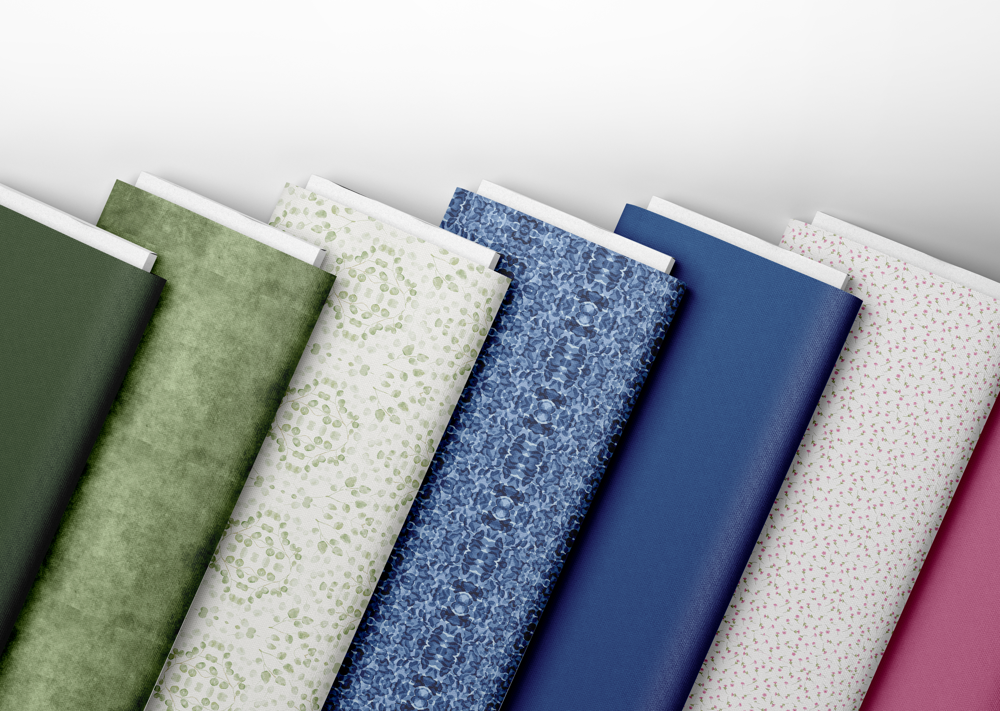
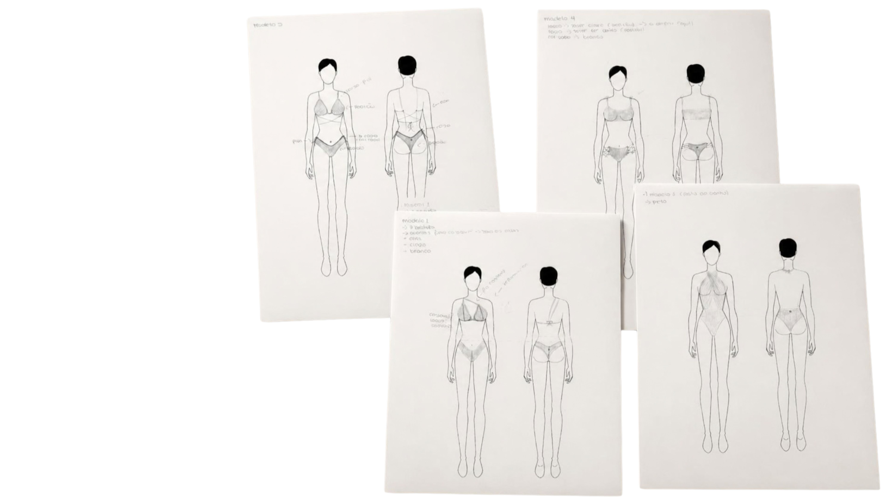
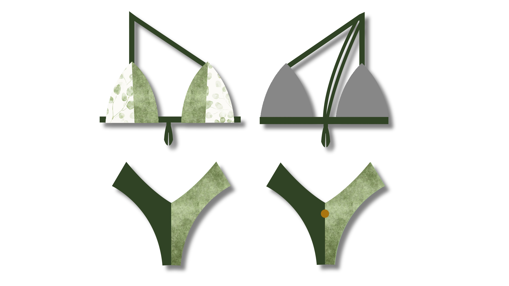
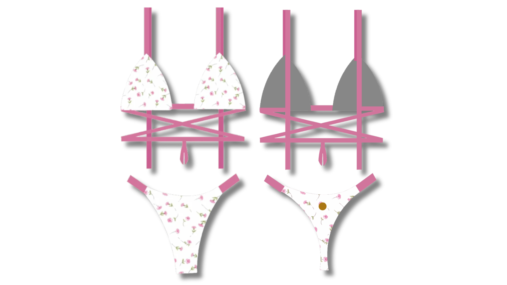
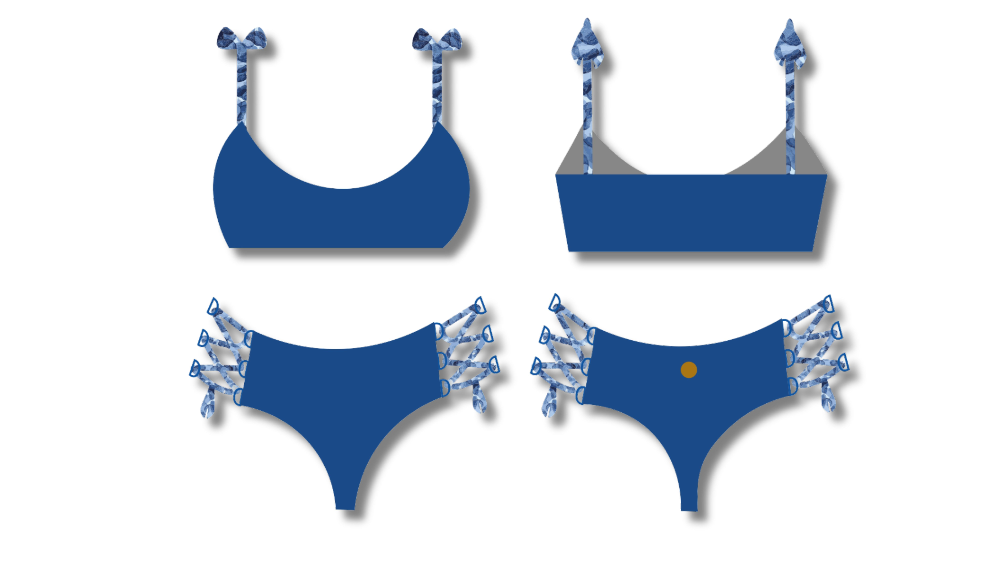
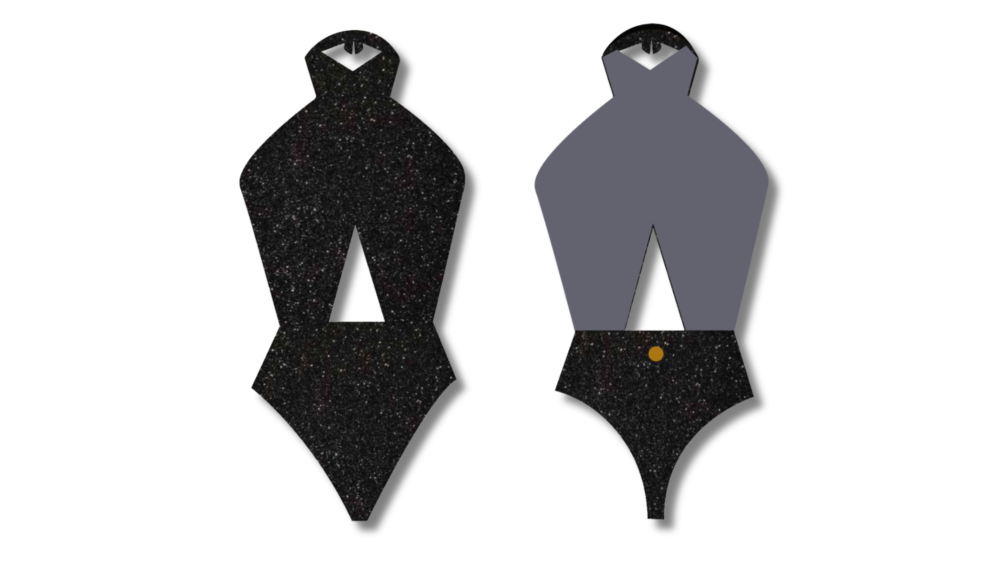
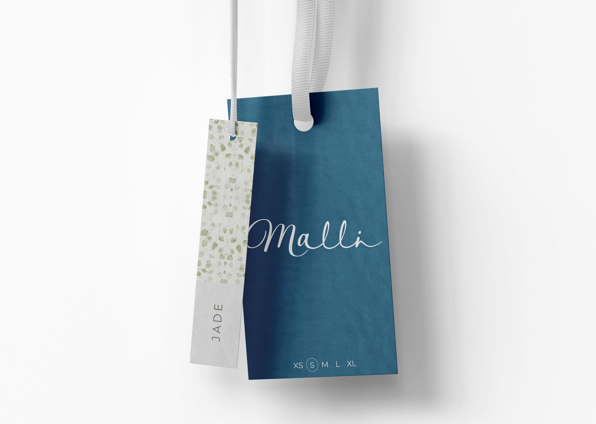
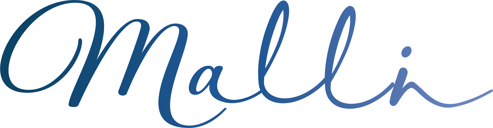
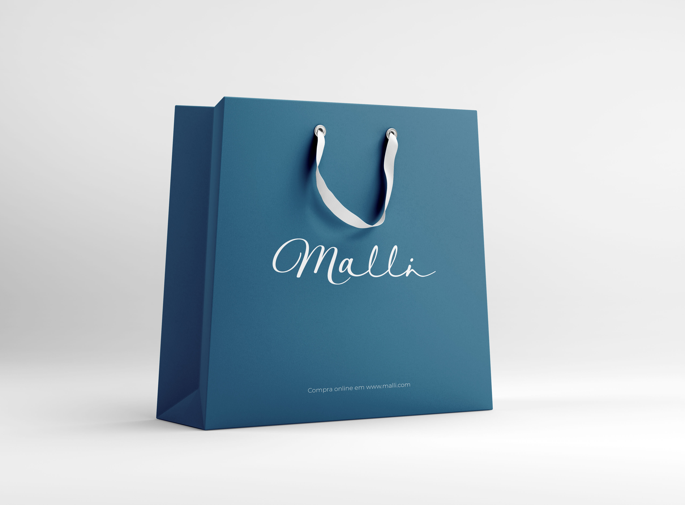
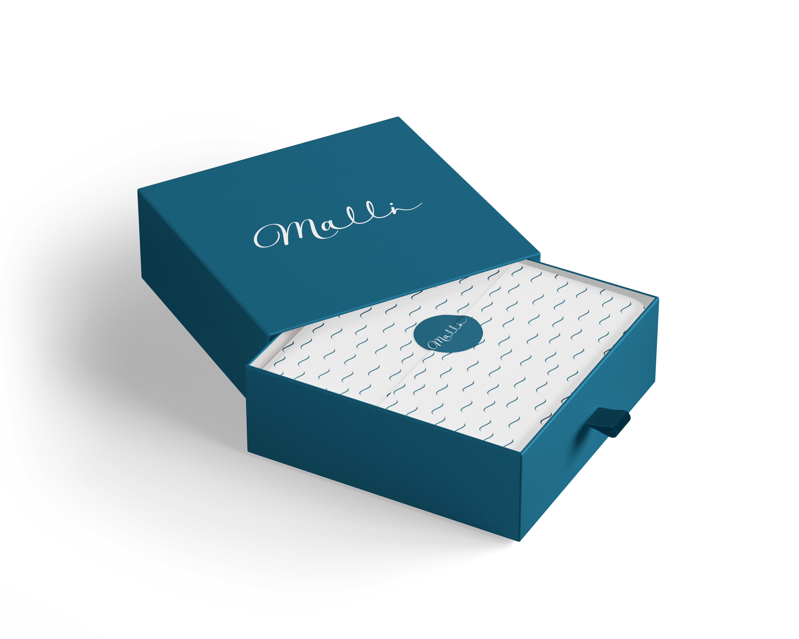

01.
Identidade e Branding
A marca Malli foi criada com o principal objetivo de trazer inovação no mercado, sendo esta uma marca de biquínis totalmente personalizáveis e exclusivos. Cada pessoa é única e as suas escolhas devem refletir essa individualidade, a marca traduz essa essência através da escolha da própria cor da peça, padrão e textura.
Este projeto foi desenvolvido no âmbito da Prova de Aptidão Profissional, como projeto final do ensino secundário, tendo este como principal objetivo a construção de uma identidade inovadora e diferenciadora perante o mercado.








Conceito do Logótipo
O logótipo criado apresenta uma contrastante semelhança com o movimento das ondas do mar, representando assim fluidez, liberdade e a sensualidade natural associada à paisagem costeira.
As três cores simbolizam o ciclo envolvente das ondas, sendo a tonalidade mais escura representada pela profundidade misteriosa do oceano, enquanto que a transição gradual para tons mais claros reflete a ascensão da onda em direção à areia.





.png)
.png)
.png)
Exploração Visual
Nesta fase do projeto, explorei diferentes aplicações da identidade visual da Malli, procurando manter uma linguagem gráfica coerente em todos os suportes.
Através de embalagens, cartões e outros materiais de comunicação, procurei demonstrar a versatilidade da marca e a forma como a sua identidade pode ser aplicada em diferentes contextos.